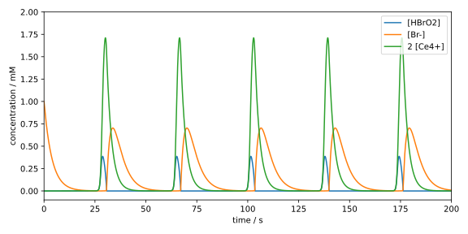
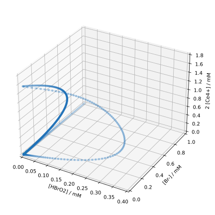

Runge-Kutta-Verfahren
Die Runge-Kutta-Verfahren sind eine nach Carl Runge und Martin Wilhelm Kutta benannte Familie von Methoden zur numerischen Lösung von Anfangswertproblemen für gewöhnliche Differentialgleichungen. Diese Methoden berechnen iterativ die Lösung im nächsten Zeitschritt aus einer Linearkombination von dem Funktionswert und den Steigungen an verschiedenen Stellen. Sprich man jedoch von dem Runge-Kutta-Verfahren, ist das klassische Runge-Kutta-Verfahren gemeint, was aber nur ein Spezialfall der Runge-Kutta-Verfahren darstellt.
Theoretische Grundlagen
Wir betrachten wieder das Anfangswertproblem (AWP) in Gl. (2.4). Genau so wie beim Euler-Verfahren, wählen wir zunächst ein gleichmäßiges Grid mit und als Schrittweite, sowie eine Anfangsbedingung . Dann entwickeln wir wieder in eine Taylor-Reihe um : Man spricht von einem Runge-Kutta-Verfahren der (Konsistenz-)Ordnung , wenn das Taylorpolynom bis zum -ten Grad im Verfahren berücksichtigt wird.
Ein allgemeines Runge-Kutta-Verfahren für das AWP in Gl. (2.4) ist dann durch gegeben, wobei Dabei bezeichnet die Stufe des Verfahrens. Die Koeffizienten , und sind charakteristische Parameter des Verfahrens. Hier werden wir nur explizite Runge-Kutta-Verfahren betrachten, bei denen die Koeffizienten und für gelten.
Weil die allgemeine Form doch sehr unhandlich ist, betrachten wir zuerst ein zwei-stufiges Verfahren zweiter Ordnung.
Runge-Kutta-Verfahren zweiter Ordnung (RK2)
Nach Gl. (2.10) können wir ein explizites zwei-stufiges Runge-Kutta-Verfahren zweiter Ordnung formulieren als
Für ein Verfahren zweiter Ordnung benötigen wir ein Taylorpolynom zweiten Grades, in dem die zweite Ableitung von vorkommt. Da wir aber nicht kennen, haben wir keinen direkten Zugriff auf die zweite Ableitung. Wir können jedoch mit Hilfe der Kettenregel wie folgt ausdrücken: Das liefert und das Taylorpolynom zweiten Grades:
Anschließend entwickeln wir in Gl. (2.11) linear um : Setzen wir dies in Gl. (2.11) ein, erhalten wir
Damit das Verfahren tatsächlich eine Konsistenzordnung von hat, müssen die Koeffizienten vor den Funktionen und ihren Ableitungen in Gl. (2.12) und (2.13) übereinstimmen, da diese für beliebige Funktionen gelten müssen. Das führt zu den Bedingungen Das ist ein unterbestimmtes Gleichungssystem mit drei Gleichungen für vier Unbekannte. Wir können demnach einen der Koeffizienten frei wählen und erhalten so eine Familie von konsistenten Runge-Kutta-Verfahren zweiter Ordnung mit zwei Stufen.
Wählen wir , und , erhalten wir das sog. Heun-Verfahren. Wählen wir dagegen , , und , erhalten wir das sog. Mittelpunktsverfahren. Neben diesen beiden geläufigen Verfahren kann man natürlich auch andere Kombinationen der Koeffizienten wählen, solange die Bedingungen in Gl. (2.14) erfüllt sind. Eine allgemeine Parametrisierung der Koeffizienten lautet
Die Angabe der einzelnen Koeffizienten auf diese Weise ist jedoch nicht sehr übersichtlich, wenn man bedenkt, dass es auch Verfahren mit mehr als zwei Stufen gibt. Daher gibt es eine kompaktere Schreibweise, das sog. Butcher-Tableau.
Butcher-Tableau
Das Butcher-Tableau ist eine übersichtliche Darstellung der Koeffizienten , und eines Runge-Kutta-Verfahrens. Das Tableau für ein allgemeines -stufiges Verfahren lautet
wobei die Koeffizienten mit einem Index ( und ) als Vektoren und die Koeffizienten mit zwei Indices () als eine Matrix dargestellt werden.
Das Heun-Verfahren kann damit als und das Mittelpunktsverfahren als dargestellt werden. Die allgemein parametrisierte Form eines 2-stufigen Verfahrens zweiter Ordnung lautet dann
Als eine letzte Bemerkung sei noch gesagt, dass die Bedingung für bei expliziten Runge-Kutta-Verfahren in dieser Darstellung bedeutet, dass die Matrix eine strikte untere Dreiecksmatrix ist.
Klassisches Runge-Kutta-Verfahren (RK4)
Das am häufigsten verwendete Runge-Kutta-Verfahren ist das klassische Runge-Kutta-Verfahren. Diese ist eine vierstufige Methode vierter Ordnung, hat also die Form Die Bedingungen für die Koeffizienten kann auf die gleiche Weise wie beim RK2 hergeleitet werden; die Rechnungen sind jedoch deutlich aufwendiger, weswegen wir sie hier nicht durchführen.
Beim klassischen Runge-Kutta-Verfahren lauten die Koeffizienten Eine weiteres, in dem gleichen Paper[1] wie das klassische RK4-Verfahren vorgestellte, aber bei weitem nicht so bekanntes Verfahren nutzt die Koeffizienten
Sie wundern sich vielleicht, warum das klassische RK4-Verfahren so beliebt ist, obwohl es Verfahren mit höherer Ordnung gibt. Dabei sollte man allerdings das folgende bedenken:
Die Konsistenzordnung und die Stufe des Verfahrens sind zwei verschiedene Dinge, obwohl wir bis jetzt nur Verfahren mit betrachtet haben. Tatsächlich gilt für die minimale Stufenzahl zum Erreichen einer Konsistenzordnung bei expliziten Runge-Kutta-Verfahren stets .
Man kann sogar zeigen, dass für die strikte Ungleichung gilt.[2] In anderen Worten: Die Verbesserung der Genauigkeit von auf unter Verwendung von expliziten Runge-Kutta-Verfahren ist mit einer Erhöhung der Stufezahl um mindestens 2 verbunden. Dies erklärt, warum das klassische RK4-Verfahren so beliebt ist.
Der Zusammenhang zwischen und für einige Ordnungen von expliziten Runge-Kutta-Verfahren ist in der folgenden Tabelle zusammengefasst:[2]
| 1 | 2 | 3 | 4 | 5 | 6 | 7 | 8 | |
| 1 | 2 | 3 | 4 | 6 | 7 | 9 | 11 |
Die Zahlen sind auch als Butcher-Schranken bekannt.
M. W. Kutta, Z. Math. Phys. 1901, 46, 435–453.
J. C. Butcher, in The Numerical Analysis of Ordinary Differential Equations, John Wiley & Sons, Chichester, 1987, pp. 185–194.
Implementierung
Wir verwenden als Beispiel erneut die Dynamik der Belousov-Zhabotinsky-Reaktion. Genau wie im Abschnitt 2.2 importieren wir zunächst die notwendigen Libraries
import numpy as np
import matplotlib.pyplot as plt
from typing import Callable
und kopieren die Implementierung der Funktion dydx.
def dydx(x: float, y: np.ndarray) -> np.ndarray:
# concentrations adapted from
# R. J. Field, H.-D. Försterling, J. Phys. Chem. 1986, 90, 5400–5407.
k1 = 1.3 # M^-1 s^-1
k2 = 2.4e6 # M^-1 s^-1
k3 = 34.0 # M^-1 s^-1
k4 = 3.0e3 # M^-1 s^-1
k5 = 1.0 # M^-1 s^-1
c_a = 0.1 # M
c_b = 0.4 # M
c_x, c_y, c_z = y
dcxdt = k1 * c_a * c_y - k2 * c_x * c_y + k3 * c_a * c_x - 2.0 * k4 * c_x**2
dcydt = -k1 * c_a * c_y - k2 * c_x * c_y + k5 * c_b * c_z
dczdt = k3 * c_a * c_x - k5 * c_b * c_z
return np.array([dcxdt, dcydt, dczdt])
RK4-Verfahren
Dann implementieren wir die Funktion rk4_step, die den Funktionswert
mit Hilfe des RK4-Verfahrens gemäß
Gl. (2.16) berechnet.
def rk4_step(
x_n: float,
y_n: np.ndarray,
h: float,
dydx: Callable[[float, np.ndarray], np.ndarray],
) -> np.ndarray:
a21 = 1.0 / 3.0
a31 = -1.0 / 3.0
a32 = 1.0
a41 = 1.0
a42 = -1.0
a43 = 1.0
b1 = 1.0 / 8.0
b2 = 3.0 / 8.0
b3 = 3.0 / 8.0
b4 = 1.0 / 8.0
c2 = 1.0 / 3.0
c3 = 2.0 / 3.0
c4 = 1.0
k1 = dydx(x_n, y_n)
k2 = dydx(x_n + h * c2, y_n + h * a21 * k1)
k3 = dydx(x_n + h * c3, y_n + h * (a31 * k1 + a32 * k2))
k4 = dydx(x_n + h * c4, y_n + h * (a41 * k1 + a42 * k2 + a43 * k3))
return y_n + h * (b1 * k1 + b2 * k2 + b3 * k3 + b4 * k4)
Die Funktion sieht zwar auf den ersten Blick kompliziert aus, ein Großteil der Zeilen ist allerdings nur für die Definition der Koeffizienten des RK4-Verfahrens belegt, wobei wir die weniger bekannte Variante des RK4- Verfahrens verwendet haben. Danach werden die vier Stufen berechnet und zum Schluss die Lösung entsprechend Gl. (2.16) ausgegeben.
Als nächstes implementieren wir die Funktion rk4_method:
def rk4_method(
x0: float,
y0: np.ndarray,
h: float,
dydx: Callable[[float, np.ndarray], np.ndarray],
nsteps: int,
) -> np.ndarray:
ndim = len(y0)
x = x0 + np.arange(0, nsteps + 1) * h
y = np.zeros((ndim, nsteps + 1))
y[:, 0] = y0
for i in range(0, nsteps):
y[:, i + 1] = rk4_step(x[i], y[:, i], h, dydx)
return x, y
Diese Funktion ist tatsächlich identisch mit der Funktion euler_method aus
dem Abschnitt 2.2, nur dass wir hier
rk4_step statt euler_step aufrufen. Man könnte auch eine allgemeingültige
Funktion rk_method schreiben, die als Argument rk_step sowohl euler_step als auch rk4_step akzeptiert.
Zum Schluss lösen wir das AWP mit dem RK4-Verfahren:
CX_0 = 0.0 # M
CY_0 = 0.001 # M
CZ_0 = 0.0 # M
C0 = np.array([CX_0, CY_0, CZ_0])
T0 = 0.0
STEP = 0.001
TMAX = 200.0
nsteps = int(TMAX / STEP)
x, y = rk4_method(T0, C0, STEP, dydx, nsteps)
Leider wird hier immer noch eine Schrittweite von h = 0.001 benötigt, um
eine stabile Lösung zu erhalten. Dann plotten wir wieder die Lösung:
c_x, c_y, c_z = y * 1000.0 # convert to mM
fig, ax = plt.subplots(figsize=(8, 4))
ax.plot(x, c_x, label='[HBrO2]')
ax.plot(x, c_y, label='[Br-]')
ax.plot(x, c_z, label='2 [Ce4+]')
ax.set_xlabel('time / s')
ax.set_ylabel('concentration / mM')
ax.set_xlim(0, 200)
ax.set_ylim(-0.1, 2.0)
fig.tight_layout()
ax.legend(loc='upper right')
plt.show()
Optisch sollte das Ergebnis identisch wie das des Euler-Verfahrens sein: 
Ein möglicher Grund, warum das RK4-Verfahren nur eine geringfügig größere Schrittweite als das Euler-Verfahren verwenden kann, ist, dass das AWP steif ist, also dass explizite Verfahren erhebliche Schwierigkeiten haben, eine stabile Lösung zu finden.
Um das AWP mit weniger Schritten zu lösen, können wir
z.B. adaptive Schrittweitenverfahren verwenden, welche die Schrittweite
an schwierigen Stellen automatisch verkleinern. Alternativ können wir
implizite Verfahren verwenden, die stabiler sind als explizite Verfahren.
Wir wollen uns hier jedoch nicht mit Details dieser Verfahren beschäftigen,
sondern lediglich diskutieren, wie und wann man sie einsetzen sollte.
Deshalb werden wir im folgenden Abschnitt die Funktion solve_ivp aus der
Bibliothek scipy verwenden, die eine Vielzahl von Verfahren zur Lösung
von AWP bereitstellt.
Lösen von AWP mit scipy.integrate.solve_ivp
Die Funktion
scipy.integrate.solve_ivp
bietet ein universelles Interface für eine Vielzahl von Verfahren zur Lösung
von AWP. Wir importieren diese Funktion sowie andere notwendige Libraries wie
gewohnt:
import numpy as np
import matplotlib.pyplot as plt
from scipy.integrate import solve_ivp
Wir nutzen hier wieder die Funktion dydx vom Oregonator-Modell.
Danach definieren wir die Anfangsbedingungen und die Parameter für den
DGL-Solver, genau so wie wir bisher gemacht haben:
CX_0 = 0.0 # M
CY_0 = 0.001 # M
CZ_0 = 0.0 # M
C0 = np.array([CX_0, CY_0, CZ_0])
T0 = 0.0
TMAX = 200.0
MAXSTEP = 0.1
Ein Unterschied hier ist, dass wir die Konstante STEP durch MAXSTEP
ersetzt haben, da der Algorithmus von solve_ivp die Schrittweite selbst
anpasst und wir nur eine obere Schranke setzen können.
Danach rufen wir die Funktion solve_ivp auf mit der Methode RK45:
res = solve_ivp(
dydx,
(T0, TMAX),
C0,
method='RK45',
max_step=MAXSTEP,
)
x, y = res.t, res.y
nsteps = len(x) - 1
minstep = np.min(np.diff(x))
print(nsteps)
print(minstep)
Als Ergebnis erhalten wir ein Objekt mit verschiedenen nützlichen Attributen.
Das Grid ist im Attribut t gespeichert und die
Lösung im Attribut y. Die Anzahl der Schritte berechnen wir aus der
Länge des Grids abzüglich 1 (Anfangsbedingung).
RK45 ist ein adaptives Runge-Kutta-Verfahren mit einer Konsistenzordnung
von 5, weshalb die Schrittweite nicht konstant ist. Trotzdem können wir
die kleinste Schrittweite berechnen, indem wir zuerst die Differenz zwischen
allen Gridpunkten mit
np.diff
berechnen und dann das Minimum davon mit
np.min
bestimmen. Die minimale Schrittweite gibt an, mit welcher Präzision das Verfahren die
Lösung an den schwierigsten Stellen berechnet hat und bietet einen guten
Vergleich gegenüber Verfahren mit konstanter Schrittweite.
In diesem Fall werden nur knapp 30.000 Schritte benötigt, um eine stabile Lösung des AWPs zu erhalten. Das ist deutlich weniger als die 200.000 Schritte, die unsere Implementierung des klassischen RK4-Verfahrens benötigt hat. Die minimale Schrittweite beträgt dabei ca. 0.0012, also nur unwesentlich größer als die Schrittweite beim RK4-Verfahren.
assert nsteps == 27611
assert np.isclose(minstep, 0.00121700)
Die Erhöhung der Ordnung von 4 auf 5 hat dem Lösungsverfahren demnach kaum geholfen; die adaptive Schrittweitensteuerung dagegen schon.
Testen Sie die Funktion solve_ivp mit den Argumenten method='DOP853'
und max_step=0.02. DOP8(5,3) ist ein adaptives Runge-Kutta-Verfahren
mit einer Konsistenzordnung von 8. Sie werden feststellen, dass die
minimale Schrittweite bei ca. 0.002 liegt, also trotz der hohen Ordnung
immer noch sehr klein ist. Das bestätigt die Aussage, dass das AWP steif ist.
Nun probieren wir ein implizites Verfahren aus, z.B. mit method='Radau'
(und wieder MAXSTEP=0.1):
res = solve_ivp(
dydx,
(T0, TMAX),
C0,
method='Radau',
max_step=MAXSTEP,
)
x, y = res.t, res.y
nsteps = len(x) - 1
minstep = np.min(np.diff(x))
print(nsteps)
print(minstep)
Dabei sollten Sie ungefähr die folgenden Werte für nsteps und minstep erhalten:
assert nsteps == 2014
assert np.isclose(minstep, 0.01494846)
Hier gibt es einen erheblicher Unterschied: Das Radau-Verfahren benötigt nur knapp über 2000 Schritte und die minimale Schrittweite ist ca. 0.015. Dass implizite Verfahren die Stabilität der Lösung signifikant verbessern, ist eine weitere Eigenschaft von steifen AWPs.
Wir könnten die Lösung des AWPs der Belousov-Zhabotinsky-Reaktion an dieser Stelle erneut plotten, was uns allerdings keine neuen Erkenntnisse liefern wird. Stattdessen widmen wir uns zwei weiteren Visualierungsmethoden von Lösungen von AWPs: Konfigurationsraum- und Phasenraumtrajektorien.
Konfigurationsraum und Phasenraum
Der Konfigurationsraum ist der Raum der Freiheitsgrade eines Systems. Für das Oregonator-Modell sind das die Konzentrationen der drei Spezies, also , und . Die Lösung des DGL-Systems zum Zeitpunkt ist also durch den Punkt im Konfigurationsraum gegeben. Die Zeitentwicklung des Systems kann demnach durch eine Reihe von Punkten im Konfigurationsraum beschrieben. Die Ansammlung dieser Punkte wird dann als Konfigurationsraumtrajektorie bezeichnet.
Da die Information, zu welchem Zeitpunkt welcher Punkt im Konfigurationsraum durchlaufen
wird, verloren geht, wollen wir festlegen, dass der zeitliche Abstand zwischen zwei Punkten
in der Trajektorie konstant bleibt. Somit können wir wenigsten eine grobe Vorstellung
der Zeitentwicklung des Systems erhalten, da Punkte mit größerem Abstand im Konfigurationsraum
schneller durchlaufen werden. Das können wir erreichen, indem
wir das Argument dense_output=True an die Funktion solve_ivp übergeben.
Damit wird das Attribut sol des Rückgabewerts resein
scipy.integrate.OdeSolution-Objekt
sein, was wie eine Funktion behandelt werden kann.
res = solve_ivp(
dydx,
(T0, TMAX),
C0,
method='Radau',
max_step=MAXSTEP,
dense_output=True,
)
x_plot = np.linspace(T0, TMAX, 5000)
y_plot = res.sol(x_plot)
Hier definieren wir nach dem Lösen des AWPs ein gleichmäßiges Grid mit
np.linspace,
wobei wir 5000 gleichmäßig verteilte Punkte zwischen T0 und TMAX wählen.
Die Lösung des AWPs an diesen Punkten erhalten wir dann durch Aufrufen der
Funktion res.sol mit dem Grid als Argument.
Alternativ kann mit dem Argument t_eval eine Liste von Zeitpunkten an solve_ivp
übergeben werden, an denen die Lösung berechnet werden soll.
Nun können wir die Konfigurationsraumtrajektorie der Lösung mit den zeitlich gleichmäßig verteilten Punkten plotten:
c_x, c_y, c_z = y_plot * 1000.0 # convert to mM
fig1, ax1 = plt.subplots(figsize=(6, 6), subplot_kw={'projection': '3d'})
ax1.scatter(c_x, c_y, c_z, s=10, alpha=0.1)
ax1.set_xlabel('[HBrO2] / mM')
ax1.set_ylabel('[Br-] / mM')
ax1.set_zlabel('2 [Ce4+] / mM')
ax1.set_xlim(0.0, 0.4)
ax1.set_ylim(0.0, 1.0)
ax1.set_zlim(0.0, 1.8)
fig1.tight_layout(rect=[0, 0, 0.95, 1.00])
plt.show()
Da der Konfigurationsraum dreidimensional ist, müssen wir beim Aufrufen der
Funktion plt.subplots das Argument subplot_kw={'projection': '3d'}
übergeben. Wir verwenden hier die Methode scatter anstatt von plot, um
die Punkte einzeln darzustellen. Mit dem Argument
s kann die Größe der Punkte eingestellt werden und mit alpha
die Transparenz, wobei wir alpha=0.1 (d.h. 10%) gewählt haben.
Die Methode
tight_layout
hat leider Schwierigkeiten mit 3D-Plots, weshalb wir hier den
gewünschten Bereich des Plots mit dem Argument rect=[0, 0, 0.95, 1.00]
manuell angepasst haben.
Das Ergebnis sollte wie folgt aussehen:

Durch die Einstellung alpha=0.1 können wir jetzt erkennen, welche Bereiche
des Konfigurationsraums mit welcher Frequenz besucht werden.
Am Anfang der Reaktion ist nur vorhanden (hintere Ecke). Danach nimmt seine
Konzentration ab, während die Konzentrationen der anderen Spezies erstmal auf einem Niveau nahe Null bleiben.
Da dieses Ereignis nur einmal stattfindet, sind die Punkte auch nur sehr
schwach sichtbar. Danach beginnt die Oszillation des Systems. Auch hier kann
man anhand der Farbstärke erkennen, dass die Änderung von (oberer Bogen)
schneller verläuft als die von (rechter Bogen).
Der Konfigurationsraum allein ist allerdings nicht ausreichend für eine vollständige Beschreibung des Systems. Wir wissen z.B. bei einer gegebenen -Konzentration nicht, ob diese gerade steigt oder fällt, d.h. in welcher Richtung das System sich auf der geschlossenen Kurve bewegt. Um das zu bestimmen, benötigen wir zusätzlich die “Geschwindigkeiten” oder “Impulse” der Koordinaten. Ein Raum, der sowohl die Koordinaten als auch die Geschwindigkeiten enthält, wird als Phasenraum bezeichnet.
Der Phasenraum des Oregonator-Modells ist also sechsdimensional, was über
die Grenzen des menschlichen Vorstellungsvermögens hinausgeht. Deshalb
plotten wir hier einen zweidimensionalen Schnitt durch den Phasenraum, indem wir nur
die Konzentrationen von und ihre Ableitungen zeigen. Auch hier verwenden wir
die gleichmäßig ausgewertete Lösung und berechnen die Ableitung mit der
Funktion dydx:
dzdt = dydx(x_plot, y_plot)[2] * 1000.0 # convert to mM/s
fig2, ax2 = plt.subplots(figsize=(6, 6))
ax2.scatter(c_z, dzdt, c='tab:green', alpha=0.1)
ax2.set_xlabel('2 [Ce4+] / mM')
ax2.set_ylabel('(2 d[Ce4+] / dt) / (mM / s)')
fig2.tight_layout()
plt.show()
Hier plotten wir die Ableitung dzdt gegen die Konzentration c_z, ebenfalls
mit der Methode scatter und dem Argument alpha=0.1. Das Diagramm sollte
wie folgt aussehen:

Die Trajektorie startet hier im Ursprung, verläuft dann im Uhrzeigersinn, also sowohl die Konzentration als auch ihre Ableitung steigen zunächst. Dann wird der Punkt der maximalen Zunahme erreicht, während die Konzentration weiter steigt. Zu einem späteren Punkt wird die Ableitung schließlich negativ und die Konzentration nimmt leicht ab. Besonders auffällig ist das letzte Stück der Trajektorie: Die Konzentration nimmt stetig ab, während die Ableitung von stark negativ zu null wird. Dieser Bereich im Phasenraum ähnelt sehr stark einer Graden, was einer Kinetik erster Ordnung entspricht. In diesem Bereich gilt , was einen exponentiellen Zerfall darstellt. Die intensivste Färbung in diesem Plot ist um den Ursprung, was bedeutet, dass für die meisten Zeitpunkte die Konzentration von und ihre Ableitung sehr klein sind.
Zoomen Sie in den interaktiven Plot des Phasenraums hinein, um die Details der Trajektorie besser zu erkennen. Nehmen Sie dazu das Diagramm des zeitlichen Verlaufes der Konzentration als Vergleich und versuchen Sie, die Merkmale in der Phasenraumtrajektorie wiederzuerkennen.
Übung
Aufgabe 2.2: Lösen des klassischen harmonischen Oszillators mit Runge-Kutta-Verfahren
Das Euler-Verfahren liefert für die Bewegungsgleichung des harmonischen Oszillators zwar eine stabile Lösung, allerdings ist sie nicht besonders genau. Wir könnten an dieser Stelle wieder die Schrittweite verkleinern, um die Genauigkeit zu erhöhen, jedoch wollen nun testen, wie sich das klassische Runge-Kutta-Verfahren (RK4) im Vergleich zum Euler-Verfahren schlägt.
Implementieren Sie das klassische Runge-Kutta-Verfahren 4. Ordnung anhand des folgenden Butcher-Tableaus und lösen Sie das System von Differentialgleichungen des klassischen harmonischen Oszillators aus der vorherigen Aufgabe mit den Anfangsbedingungen , , und einer Schrittweite von für . Plotten Sie die numerische Lösung und vergleichen Sie sie mit der Lösung des Euler-Verfahrens, sowie der analytischen Lösung.